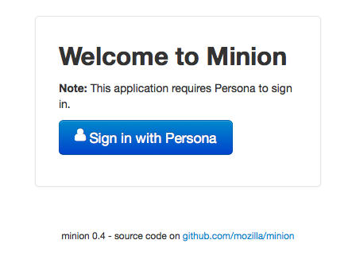
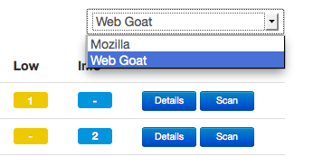
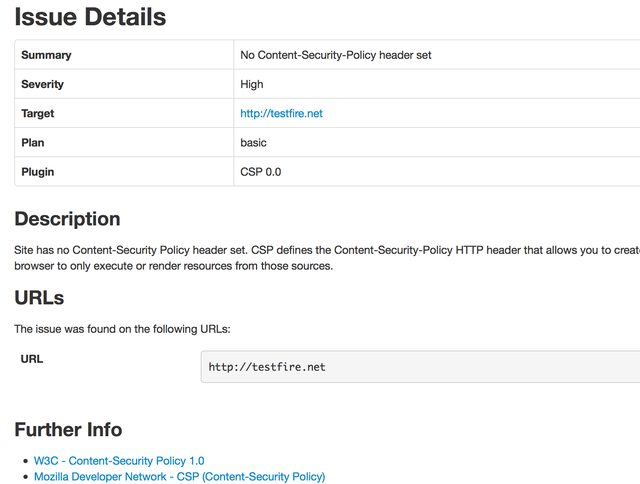
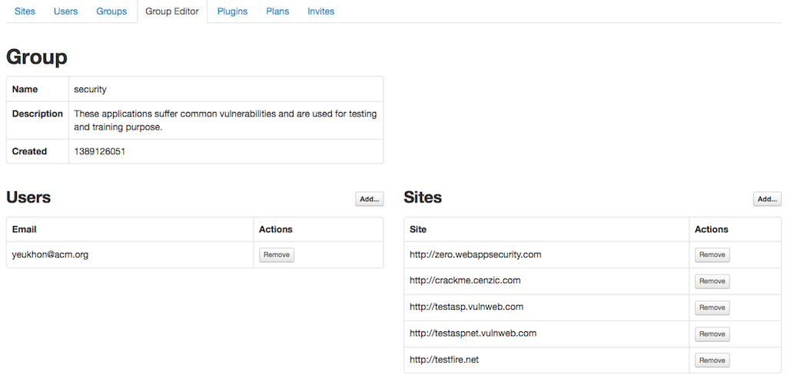
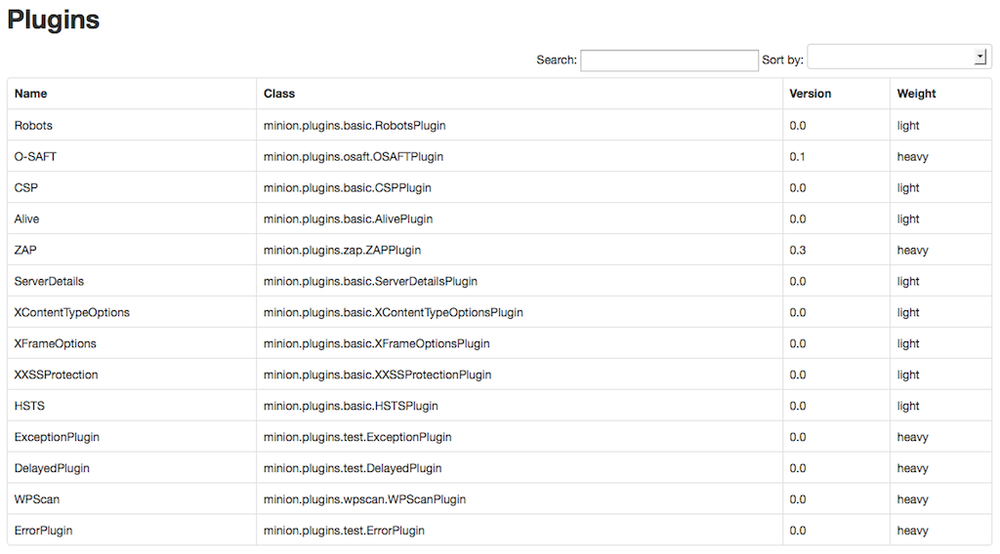
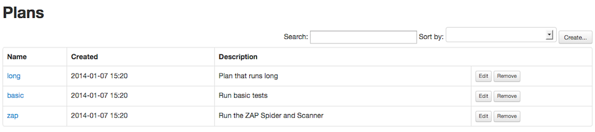

Using Frontend¶
Minion’s frontend is separate from the backend repository. Here we show how the frontend looks.
Login¶
Minion’s frontend is authenticated using Persona. You can replace Persona if you want. The backend is authentication agonistic; it is the job of the frontend web service to verify that given user has permission to access a resource. We explain this in Inside Minion.
If you are new to Persona, please check Sign up for a Persona account to find out how to make your email address into a Persona-capable email address.
Dashboard¶
The screenshot belows is the first thing a Minion user will see after logging in. The current logged in user can only see the sites that he or she has access to; the user must be in a group that the site is also in. We will explain this later in the admin section.

The dashboard shows the progress of the newest scan (if any), the number of issues discovered by the newest scan, a link to view the detail of the newest scan and a button to trigger a scan.
The Scan History tab shows all the scans performed on the site. The All Issues tab lists issues of the newest scan for each site the user has access to.
If the user is in multiple groups, the dashboard also provide a drop-down menu on the upper mid-right corner to switch the group view, as shown in the screenshot below. In this case this current logged in user belongs to two groups.
Scan Detail¶
The scan detail page lists all the issues with a short title. If the scan failed it will list the reason.

Issue Detail¶
Every issue has a detail page that describes the problem, possible mitigation and a list of references to look up.
Admin: Users¶
This panel lists all the users in Minion. As with all other panels in the rest of the administration dashboard, there is a filter and an in-page search box to find users.

Admin: Sites¶
This panel lists all the sites that have been added to this Minion instance. Currently only admin users can add sites and site url format is also restricted. As of 0.4 release, Minion can only accept url that looks like http[s]://<subdomain>*.<domain>. For example, while 192.168.1.100, foobar.com and foo.bar.com are valid, the frontend will not accept paths so that foobar.com/project/ is not acceptable.
There is a long standing ticket (https://github.com/mozilla/minion-frontend/issues/100) to loosen up this restriction in the future release of Minion.
Note
Also, since 0.3 release there is a hostname blacklist and whitelist mechanism added to Minion. Hostname like 127.0.0.1 is blocked by Minion by default. To whitelist and/or blacklist what hostname can be scanned, please refer to Hostname Whitelist and Blacklist.

Every site can have one or more attack plan. An attack plan is a JSON configuration which specifies the type of plugin the attack will use. Every site belongs to zero or more groups and only the users in those groups can scan the site. As of 0.4 release, you must add the site first and then add the site and user to a group in the Group tab.
Admin: Groups¶
As aforementioned in the previous section, once a site has been added, it should be added to a group by going to the Groups panel. Every group contains a set of users and a set of sites; only these users can access these sites. Bob’s personal blog can belong to two groups named Group A and Group B. As long as Alice is in one of these two groups, she can too scan Bob’s personal blog on Minion.

By pressing the Edit button, the user is redirected to an editor page.
Admin: Plugins¶
A Minion plugin is basically a Python class that invoke a security scan tool. This scan tool can be as simple as a few lines of Python code directly in the class or invoking an external exectuable binary (which can be a simple bash script or as complex as OWASP ZAP).
Minion’s backend actually ships with some simple Python plugins called basic plugin. In the screenshot above, they are under the namespace minion.plugins.basic. These plugins check HTTP header and robots.txt. Other plugins are not distributed with the backend. You must install them indivdually (although the backend repository has the sample configuration file for zap, skipfish and nmap).
To learn more about how to install plugins, please check Installing Plugins. For plugin development, please refer to Developing Plugins.
Admin: Plans¶
Plans are basically JSON blob/document that specifies what plugins to use (and their configurations). You can have a plan that utilizes the basic plugin and ZAP plugin.
Admin: Invites¶
If you want to invite another person to use your Minion, you can send them an invitation. You can add, resend, or cancel invitation. You can also check whether the invitation is accepted, declined or expired.
When a user is invited, the account is created, but the account is suspended until the user has accepted the invitation and is authenticated by logging in using a Persona address. If your friend has two email addresses and you invite your friend by using the non-Persona email address, your friend can accept the invitation and log in using his or her Persona email address. Minion will take care of the transition (replacing non-Persona email address in the database which his or her Persona account).